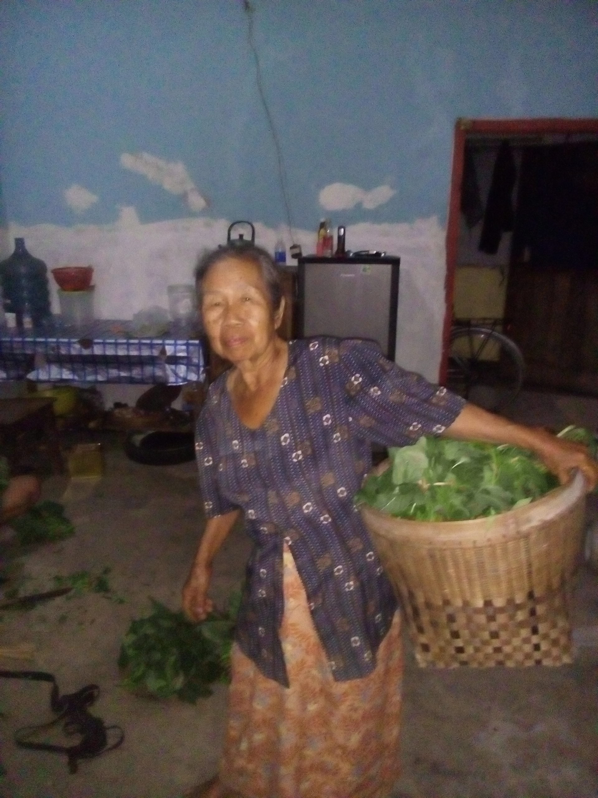

Kunjungan Tim Harimediaku
Oct 01, 2017views : 20,111,222Kunjungan CEO Harimediaku di Kota Yogyakarta bersama member dan karyawan
Whatch thisPesona Kota Kelahiran SBY
Apr 12, 2017views : 111,123,456Tempat kelahiran Presiden RI ke 6 SBY menyimpan berjuta keindahan terutama keelokan pantai dan goa.
Whatch thisPulau Dewata Ada Di Pacitan
Oct 02, 2017views : 10,000,000Pantai Banyu Tibo menyuguhkan destinasi wisata yang berbeda dibandingkan dengan pantai pada umumnya
Whatch this

Desa Sejuta Warna
Oct 02, 2017views : 30,000,000Desa dan kota merupakan perbedaan istilah penyebutan nama tempat. Namun Desa juga tidak kalah menyimpan warna-warni sosial, ekonomi, dan budayanya
Whatch this